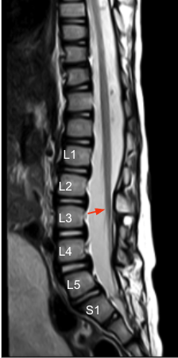

Adapted from: Jones J, Sharma R, Gaillard F, et al. Conus medullaris. Reference article, Radiopaedia.org (Accessed on 03 Jan 2026) https://doi.org/10.53347/rID-10569
1) Description of Measurement
The conus medullaris level refers to the vertebral level at which the spinal cord tapers to form the conus before continuing as the cauda equina. Determining this level is essential for identifying tethered cord syndrome, congenital anomalies, tumors, trauma, or postsurgical complications.
2) Instructions to Measure
3) Normal vs. Pathologic Ranges
Key point:
4) Important References
Grimme JD, Castillo M. Congenital anomalies of the spine. Neuroimaging Clin N Am. 2007 Feb;17(1):1-16. doi: 10.1016/j.nic.2006.11.002.
Costa Almeida L, de Souza Figueiredo YJ, Pinheiro Zylberman A, Garção DC. Ascent of the conus medullaris in human foetuses: a systematic review and meta-analysis. Sci Rep. 2022 Jul 25;12(1):12659. doi: 10.1038/s41598-022-15130-9.
Yamada S, Won DJ, Siddiqi J, Yamada SM. Tethered cord syndrome: overview of diagnosis and treatment. Neurol Res. 2004 Oct;26(7):719-21. doi: 10.1179/016164104225017947.
5) Other info....
A conus terminating below the L2 body should prompt evaluation for:
Conus level should always be interpreted with: